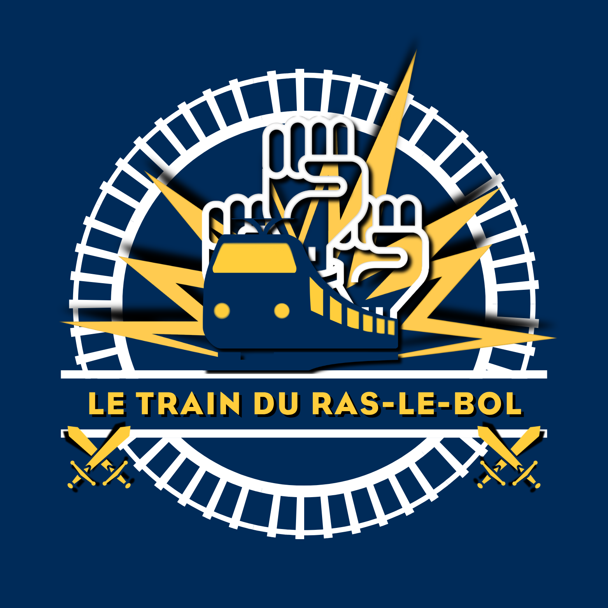

Lancée en mars 2023, la communauté en ligne « Le train du ras-le-bol » est à but non lucratif. Elle ne permet ni l’encaissement de sommes destinées à financer son fonctionnement ou à permettre un enrichissement, ni l’apport d’affaires par son intermédiaire. Son fonctionnement repose néanmoins sur la mise à disposition de moyens techniques, matériels et humains qui représentent un coût. Ce coût est supporté par les dirigeants des sociétés de l’UES qui sont à l’initiative de la communauté en ligne « Le train du ras-le-bol ». Cette mise à disposition répond à une raison d’être précise, formalisée dans un objet défini. Cet objet encadre la mise en place et le maintien de nos groupes WhatsApp « Les reporters » et justifie les moyens qui leur sont consacrés. Il implique le respect de conditions précises auxquelles nous devons nous conformer et que nous devons également faire respecter.

Inscrivez-vous dans une démarche utile en donnant un sens à votre ras-le-bol. Avec nos groupes WhatsApp « Les reporters », tout commence avec vous, et avec les 3 700 membres « reporters » présents dans les 59 groupes WhatsApp répartis sur l'ensemble du Grand-sud, du Centre et du Grand-ouest. Participez en relatant votre quotidien et en témoignant de votre réalité. Les équipiers du train du ras-le-bol se chargent de l'animation des groupes, de la coordination des actions de soutien et d'accompagnement et du recueil de vos participations afin de rassembler les arguments visant à plaider en faveur de l'amélioration des mobilités ferroviaires publiques dans l'intérêt de tous.
Avant toute chose
Nous tenons à vous préciser que nos groupes WhatsApp « Les reporters » sont des espaces animés par des salariés mis à disposition sur leur temps de travail, dans un cadre réglementé et selon les priorités liées à la charge de travail de la société qui les emploie. Appelés « équipiers du train du ras-le-bol », il s’agit de professionnels des réseaux sociaux formés aux particularités des échanges qui se déroulent dans nos groupes. Leur présence régulière contribue à instaurer une véritable proximité avec les membres de la communauté en ligne, favorise des échanges directs et continus et permet de mieux comprendre les réalités relatées. Elle permet également d’apporter des éclairages lorsque cela est nécessaire et de préserver un environnement propice à l’expression, à l’écoute et au partage. L’équipage est généralement connecté entre 6 h et 23 h.
Les équipiers du train du ras-le-bol agissent dans un cadre professionnel et maîtrisent leur périmètre de compétences et leur champ d’intervention. Ils ne sont pas personnels d’une société de transport ferroviaire et ne sont pas habilités à fournir des informations relatives au trafic, des informations commerciales ou des informations liées à la sécurité ferroviaire. Lorsqu’un sujet ou une situation dépasse leur périmètre de compétences ou leur champ d’intervention, ils procèdent à votre réorientation vers les services appropriés. Aussi, les équipiers du train du ras-le-bol ne sont pas habilités à vous assister directement en cas de danger sur le réseau ferroviaire, mais ont l’obligation de prévenir ou de faire prévenir les services compétents. Enfin, veuillez noter que « Le train du ras-le-bol » est indépendant des autorités organisatrices, des sociétés de transport ferroviaire et ne dépend pas de leurs avis ou de leurs souhaits.